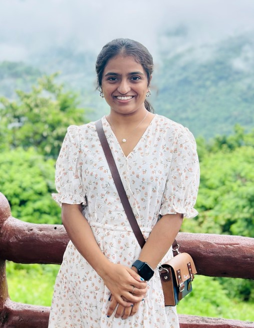

Hi, I am Priyanka and I'm |
I architect scalable distributed systems, modernize legacy monoliths, and build resilient cloud infrastructure. With of experience across Java, .NET, Go, and Scala, I specialize in microservices, event-driven architectures with Apache Kafka, and automated multi-cloud platforms. Passionate about production observability, engineering quality, and designing applied AI solutions from privacy-focused RAG pipelines to Model Context Protocol (MCP) orchestration.



My Journey
Sr. Platform Engineer & Full Stack Developer @ ExxonMobil
Dec 2022 - Present | Bangkok, Thailand
- Architecture & Migration: Defined target architecture to decouple legacy monoliths into scalable Java (Spring Boot), Go (Gin), and .NET Core microservices, improving P95 latency.
- Data Pipelines: Designed high-throughput event-driven data pipelines using Apache Kafka and Azure Event Hubs processing 250M+ transactions daily.
- Cloud & CI/CD: Engineered highly available Kubernetes (AKS) delivery pipelines via GitHub Actions and ArgoCD, standardizing multi-cloud infrastructure across Azure and Alibaba Cloud using Terraform.
- Observability & Reliability: Established Datadog observability reducing bug turnaround time, and mentored engineers to establish a 75% unit test coverage baseline.
Open Source Project: AI & Platform Engineering
Feb 2025 - Present | Bangkok, Thailand
- Built a privacy-focused RAG system using Python, Ollama, and ChromaDB for secure semantic search, integrating MCP for document retrieval.
- Implemented role-based access controls for sensitive documents and containerized AI services using Docker.
Senior Application Developer @ Demeter ICT
Aug 2019 - Nov 2022 | Bangkok, Thailand
- Designed and developed scalable backend services and RESTful APIs from scratch using Java (Spring Boot) and Node.js.
- Developed comprehensive Python automation scripts for data extraction, operational workflows, and automated end-to-end API testing.
- Executed deep database testing across GCP and AWS environments, and conducted load testing on IVR systems and Dialogflow chatbots.
Software & Data Engineer Freelance @ Seanet Singapore
Feb 2022 - Jun 2022 | Singapore
- Architected robust ETL data pipelines and batch processing workflows utilizing Apache Spark and Scala.
- Authored complex SQL transformations utilizing CTEs, window functions, and stored procedures in MS SQL Server.
- Modernized legacy codebases by designing lightweight microservices and REST APIs using Java and Kotlin.
Full Stack Engineer @ BaanBanchi Co., Ltd.
Sep 2018 - Jul 2019 | Bangkok, Thailand
- Developed an accounting and payroll application for employee tax calculations and financial records.
- Designed relational database schemas, tables, and stored procedures in MS SQL Server.
- Built user interfaces with WPF, HTML, and Bootstrap, connecting them to backend .NET services.
Education
Master of Engineering: Computer Science @ Asian Institute of Technology
Jan 2017 - Dec 2018 | Pathum Thani, Thailand
- Research Grade: Excellent (A)
Bachelor of Technology: Computer Science @ Jawaharlal Nehru Technological University
Sep 2013 - Dec 2016 | Hyderabad, India
Toolkit
Languages
Java 17/21+ Spring Boot Kotlin .NET Core Go Scala Python Node.js
Data & Messaging
Apache Kafka Apache Spark Azure Event Hubs PostgreSQL MS SQL Server MongoDB Dimensional Modeling
Cloud & CI/CD
Kubernetes (AKS) AWS & Azure & GCP Docker Terraform GitHub Actions ArgoCD Jenkins GitOps
Reliability
Datadog Prometheus Grafana Root Cause Analysis
AI Engineering
RAG Architecture Ollama ChromaDB Model Context Protocol (MCP)